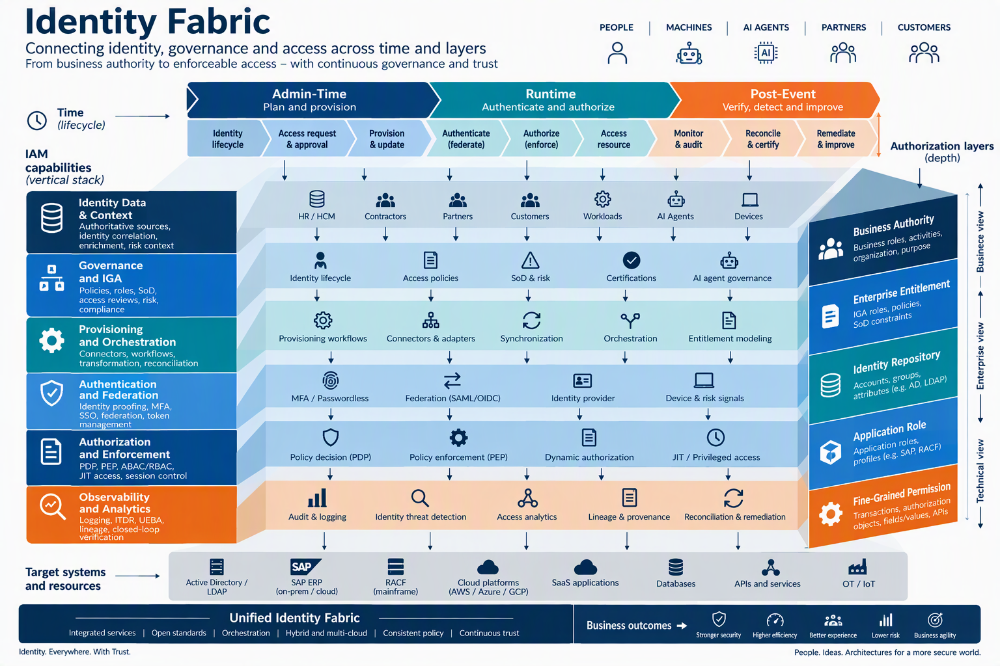
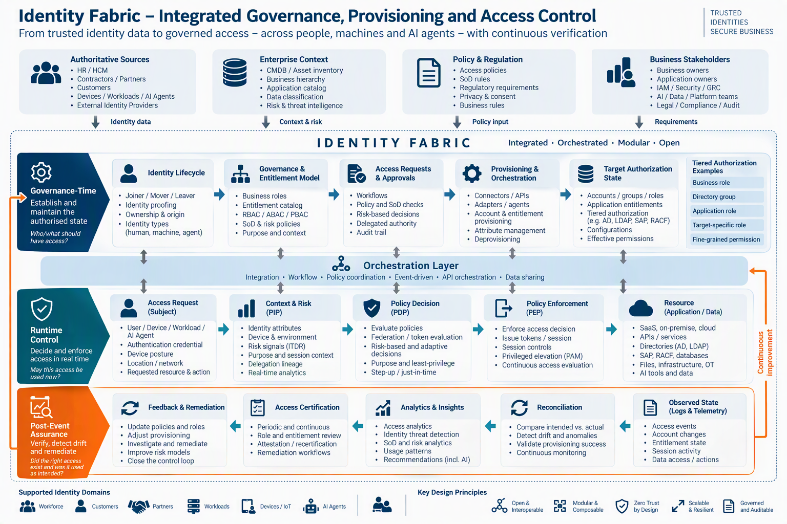
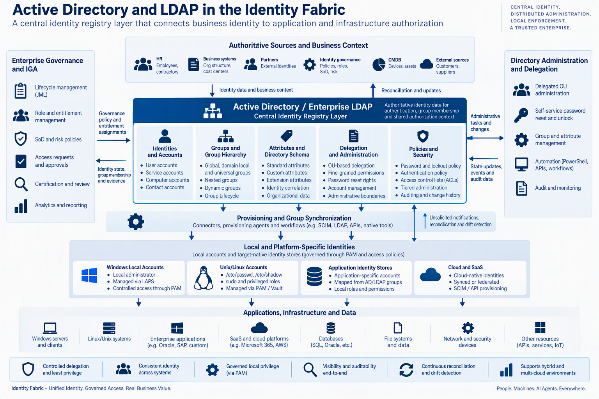
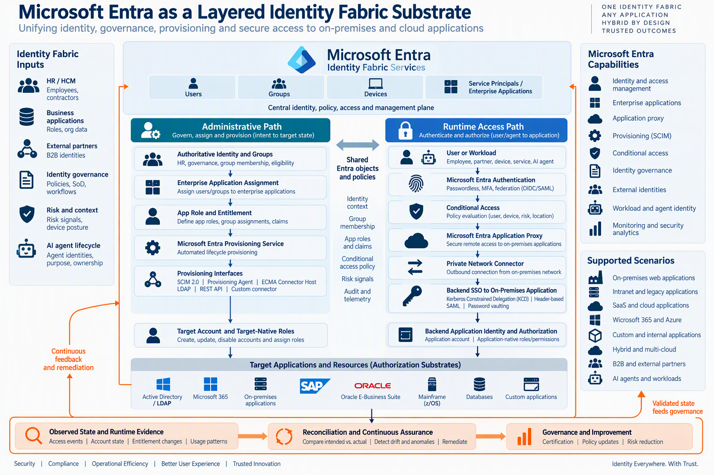
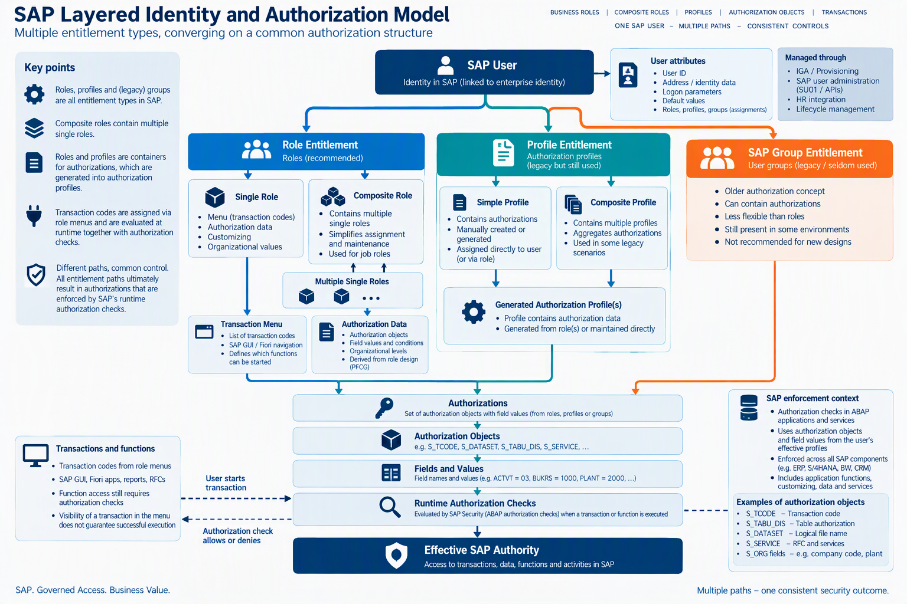
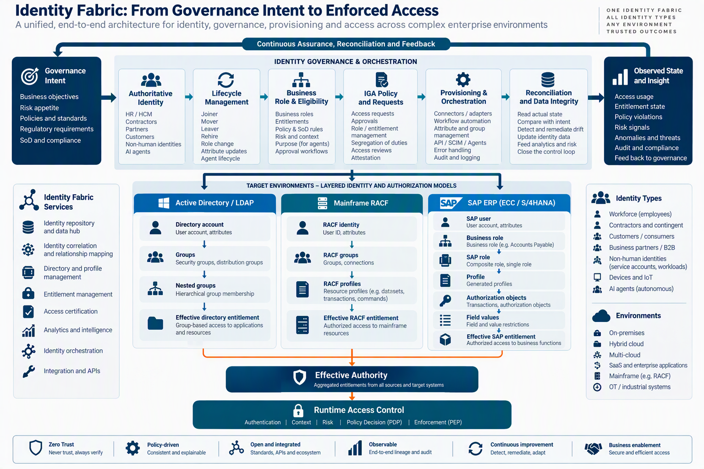

Identity architecture is often explained from the moment of access: a subject authenticates, policy evaluates context, and an enforcement point allows or denies an action. That view is necessary, but incomplete. It does not explain why the identity exists, why authority was granted, how an entitlement became a target permission, or whether the target state still matches governance intent.
Identity Fabric connects authority across time and across layers: from business intent to target state, from authentication to enforcement, and from observed outcomes back to governance.
This article presents Identity Fabric as a system of systems spanning administration, runtime control and continuing assurance. It also examines the difficult middle of enterprise IAM: shared directories, cloud identity, mainframe security and deep application-native authorization.
Identity Fabric across time and layers
A complete fabric connects what should exist, what may happen now and what actually happened.
The fabric has three time perspectives. Administration and governance establish intended identity and authority. Runtime access determines whether available authority may be exercised in the current context. Continuing assurance verifies actual state and use, detects drift and feeds remediation back into policy and lifecycle processes.
It also has authorization depth. A business responsibility can become an enterprise entitlement, a directory group, an application account, a target role and finally a fine-grained permission. Each layer preserves or transforms meaning.

The fabric is not one product.
It is the organization-specific combination of identity data, governance, provisioning, authentication, authorization, privileged access, target-native security and evidence.
Three recurring control patterns
Direct provisioning, repository-mediated authorization and tiered identity management create different control paths.
In direct provisioning, IGA changes the target through an API, adapter or standard protocol. In repository-mediated authorization, IGA changes a shared directory and applications translate directory state into local access. In tiered identity management, enterprise governance drives a downstream identity or security-administration service that owns target-native authorization.

AD and LDAP: the central registry layer
Central identity does not imply centralized administration or centralized enforcement.
Active Directory and LDAP centralize identities, attributes, groups and authentication context. Yet administration can be delegated through organizational structures, and downstream systems interpret or enforce authorization in different ways. The result is central in data and policy ownership, but distributed in administration and enforcement.
The same group can protect a Windows resource, be nested inside another group, map to an application role or supply an attribute used by local policy. Local accounts also remain relevant. Unix/Linux hosts can retain root, service and sudo-capable identities, while Windows systems retain local security principals and local administrator accounts. PAM and LAPS-type controls connect enterprise accountability to these locally enforced identities.

A directory can centralize identity context while authority remains distributed across groups, applications, operating systems and privileged local accounts.
Microsoft Entra: the cloud identity and application-access layer
Entra complements, and in some strategies progressively replaces parts of, the on-premises directory estate.
Microsoft Entra spans identity, application representation, assignment, app roles and claims, provisioning, authentication, Conditional Access and publication of private applications. The governed assignment, runtime claim, provisioned account and target-native role can therefore be different objects with different lifecycle and ownership.
Application Proxy makes the separation especially visible. Entra can perform preauthentication and apply access policy before routing traffic through a private network connector. Backend SSO can then use Kerberos constrained delegation, headers, SAML or another supported method, while the application still applies local authorization.

Transformation from AD/LDAP to an Entra-centered fabric
The transition is not a single directory replacement. It is a gradual redistribution of source-of-authority, lifecycle control, application assignment, authentication and access policy. Hybrid identity therefore needs explicit synchronization direction, correlation keys, latency objectives, reconciliation and ownership for each identity and attribute domain.
| Transformation concern | Hybrid condition | Fabric requirement |
|---|---|---|
| Source of authority | Users, groups or attributes can be mastered in different systems. | Declare authority per object and attribute domain. |
| Synchronization | Selected state is replicated between AD and Entra. | Define direction, scope, correlation, errors and reconciliation. |
| Authentication | Kerberos/LDAP coexist with modern federation and Entra policy. | Preserve one identity lineage across mechanisms. |
| Entitlements | AD groups, Entra groups, app roles and local roles coexist. | Map business meaning and effective authority across layers. |
| AD minimization | Applications and workloads leave AD at different speeds. | Reduce dependencies application by application and capability by capability. |
Specialized target-native authorization
Cloud modernization does not remove the need to govern deep, native security models.
z/OS and External Security Managers
On z/OS, the architecture should model platform security rather than RACF alone. SAF routes security requests from resource managers to the installed External Security Manager, which may be RACF, ACF2 or Top Secret. The governed resource can be a dataset, CICS transaction, Db2 object, MQ resource, z/OS UNIX capability or another protected platform object.
SAP
SAP role assignments, profile assignments and older group assignments are parallel entitlement paths. A composite role contains multiple single roles. Single-role menus and authorization data lead to generated profiles and authorizations. Runtime checks evaluate authorization objects and field values; transaction visibility is not itself proof that an operation is authorized.

Oracle E-Business Suite
Oracle EBS combines application users, responsibilities, roles and role inheritance with function security and data security. A connector may manage account and responsibility assignments, while meaningful risk analysis can still require visibility into inherited roles, available functions and the business data that policy permits the user to reach.
Provisioning, runtime control and assurance
A successful request is not the same as a verified governance outcome.
Provisioning translates approved intent into technical state. Runtime systems decide whether available authority can be exercised. Assurance compares intended state with observed state, examines use and feeds remediation back into governance. These are connected control loops rather than independent product domains.

Connector success proves that an interface processed a request. Closed-loop assurance asks whether the right target state and runtime effect were actually achieved.
Architecture principles
- Model administration, runtime access and assurance together.
- Treat provisioning as controlled policy execution.
- Treat reconciliation as verification, not merely data collection.
- Preserve semantic lineage from business authority to effective permission.
- Retain target-native truth for complex systems.
- Externalize authorization selectively rather than universally.
- Design explicitly for asynchronous processing and partial completion.
- Make evidence a first-class architectural output.
Conclusion
Identity Fabric is complete only when it explains identity and authority before, during and after access. Directories, Entra, z/OS, SAP and Oracle EBS show that enterprise authorization is translated through different layers and enforced in different places. A coherent fabric does not erase those differences. It connects them through explicit authority, mappings, lifecycle, runtime control and evidence.
The practical test is straightforward: can the organization trace a business reason through governance and provisioning into effective target authority, observe how that authority is used, and prove that it changed or disappeared when the business context changed?
References
- NIST SP 800-207, Zero Trust Architecture.
- NIST SP 1800-35, Implementing a Zero Trust Architecture.
- IETF RFC 7643 and RFC 7644, System for Cross-domain Identity Management.
- Microsoft documentation for Microsoft Entra hybrid identity, application provisioning and Application Proxy.
- IBM documentation for z/OS SAF and external security managers.
- Oracle E-Business Suite Security Guide.
- SAP user, role and authorization administration documentation.